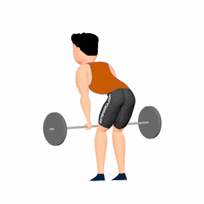

Remada Curvada Invertida

Exercício de musculação para desenvolvimento de força e espessura dorsal, enfatizando grande/latíssimo do dorso com recrutamento de trapézio, romboides e bíceps. Indicado para praticantes de nível intermediário e avançado.
Ficha Técnica
Tipo: Musculação
Grupo Muscular: Costas
Aparelho: Nenhum
Músculos: Nenhum
Como realizar
- Fique em pé com os pés na largura dos ombros e segure a barra com pegada pronada;
- Incline o tronco à frente mantendo coluna neutra e joelhos levemente flexionados;
- Inspire e puxe a barra em direção ao abdome, iniciando o movimento pela retração das escápulas;
- Contraia os músculos dorsais no topo do movimento, mantendo cotovelos próximos ao corpo;
- Expire e retorne a barra de forma controlada à posição inicial;
- Repita conforme prescrição.
 RC STORE
RC STORE